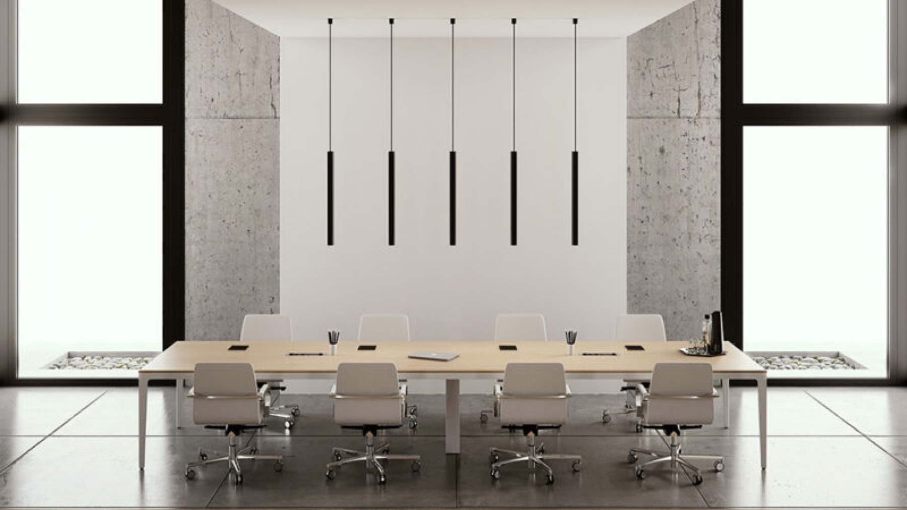
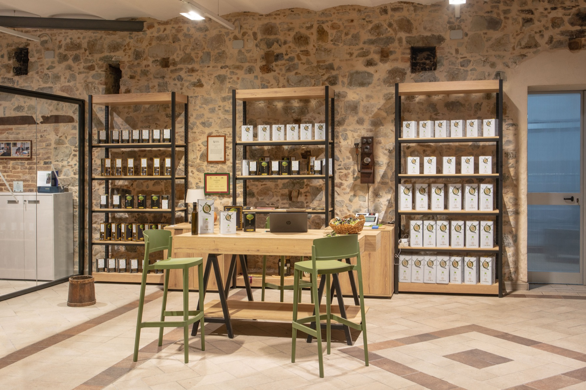
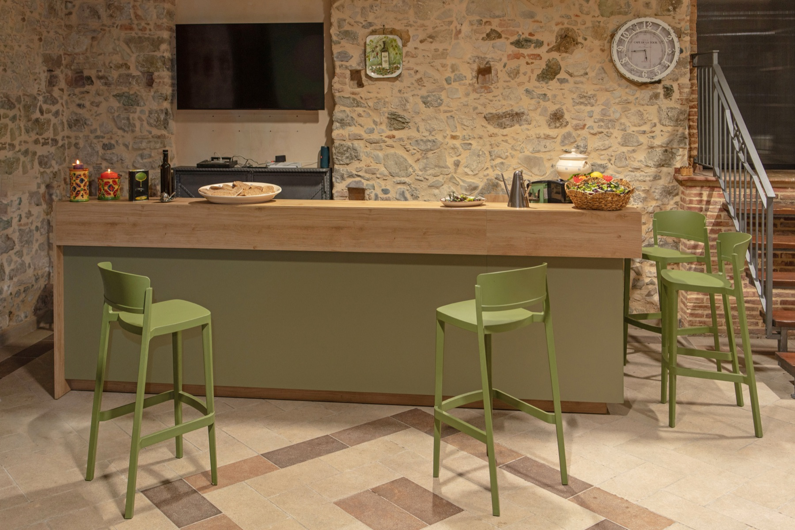
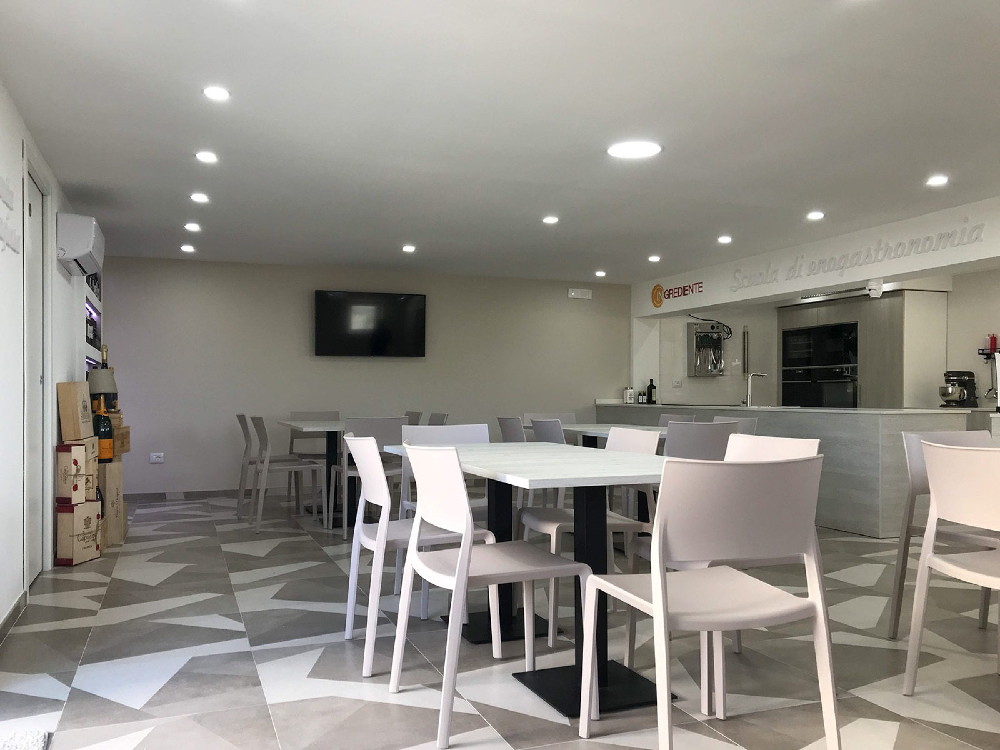
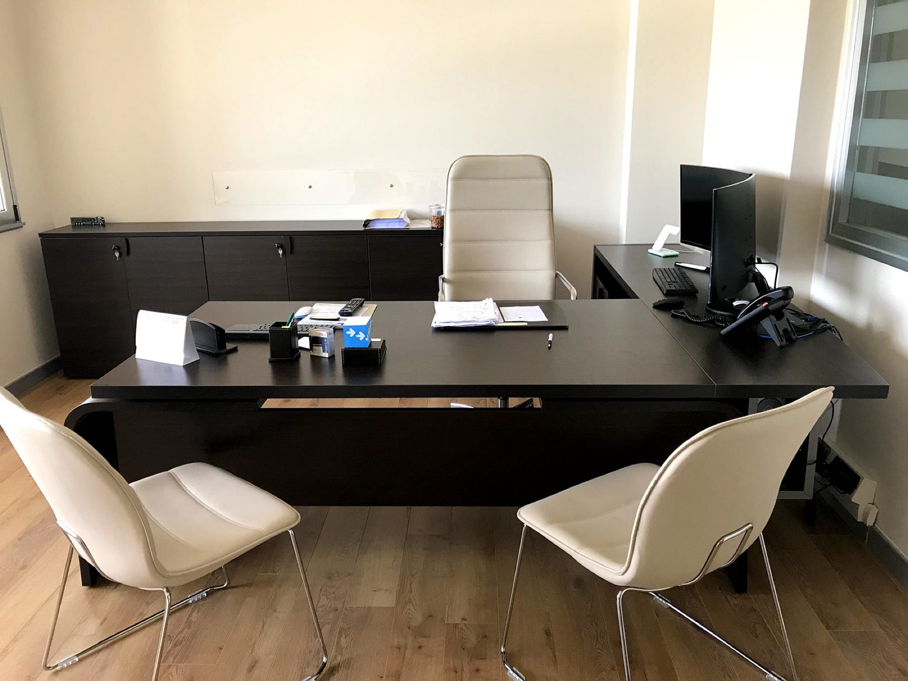
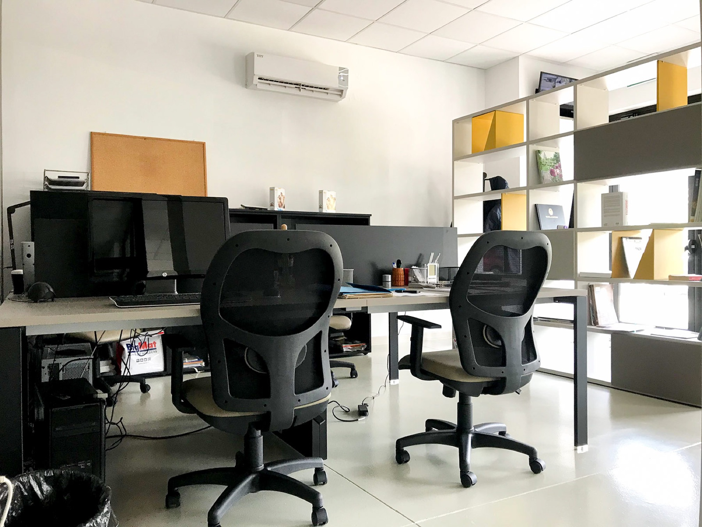
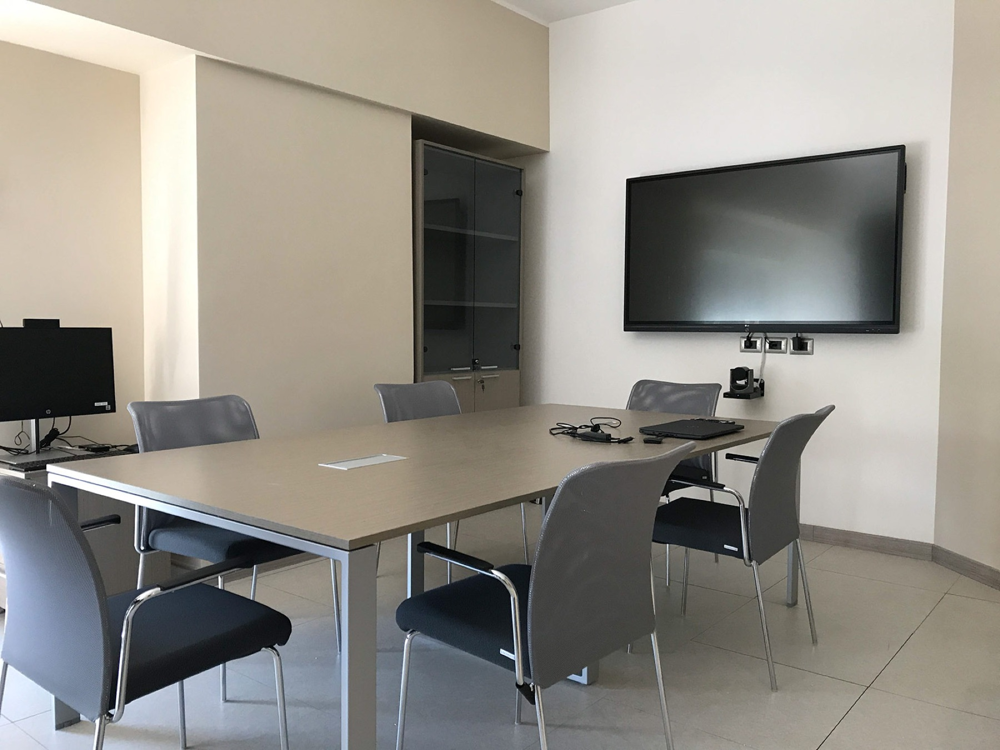
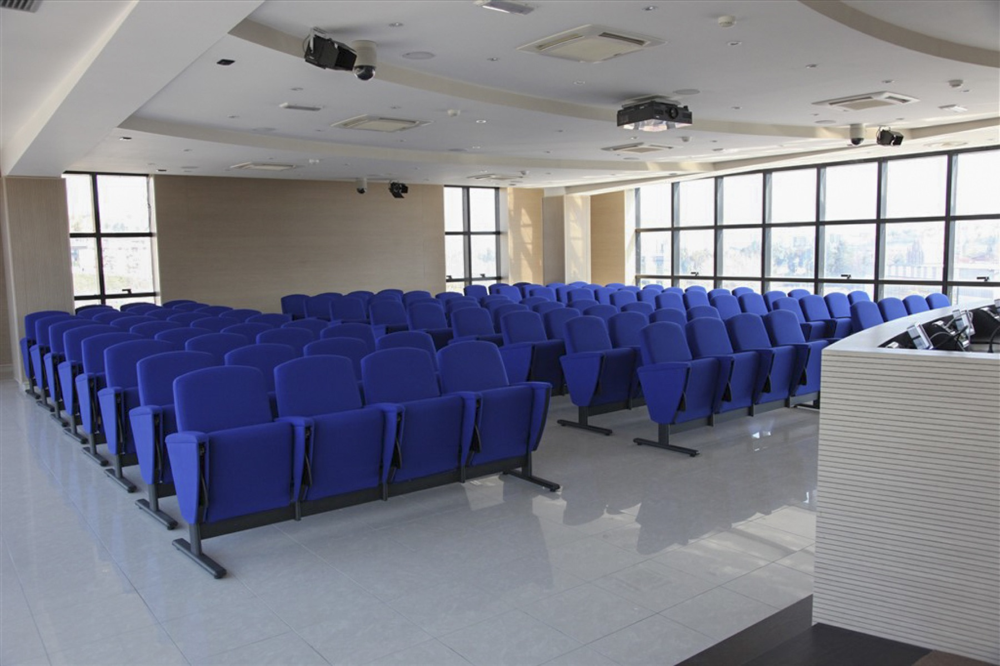

01 — Arredo uffici & workspace
L'ufficio non è
più una fila di postazioni.
Meno scrivanie fisse, più aree di relazione: il layout deve reggere riorganizzazioni che una volta avvenivano ogni dieci anni e oggi ogni due. Progettiamo partendo da acustica, riservatezza e flessibilità, non dall'estetica della postazione.

Il settore
Spazi di lavoro
che cambiano con l'azienda.
Dagli uffici direzionali alle sedi della pubblica amministrazione, progettiamo ambienti di lavoro in cui arredo, acustica e impianti nascono insieme. Il risultato è uno spazio che accoglie nuove persone e nuovi modi di lavorare senza essere rifatto da capo.
Acustica
Riservatezza dove serve
Pareti vetrate, pannelli fonoassorbenti e phone booth dimensionati sul numero di persone e sull'uso reale delle sale.
Flessibilità
Layout riconfigurabili
Bench, cablaggio continuo e arredi mobili: il layout segue un team che cresce senza interventi murari.
Pubblica amministrazione
Forniture MEPA
Uffici pubblici, scuole e biblioteche: forniture a capitolato con procedura su Acquisti in Rete PA gestita da noi.
Ambiti
- Uffici direzionali
- Open space
- Coworking
- Sale meeting e conferenze
- Academy e aule formazione
- Scuole, università, biblioteche
- Reception corporate
- Business lounge e aree break


Realizzazioni
Progetti
Arredo uffici & workspace.
Filtra per ambito per vedere solo i progetti della categoria che ti interessa.






Nessuna realizzazione pubblicata per questo ambito.